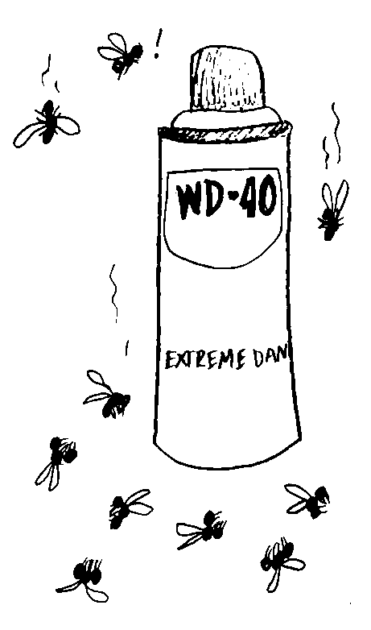

Hospitality
How to Get Rid of Carpenter Bees Using WD40
If you've found the telltale holes from carpenter bees around your home, you might want to get rid of them before they can do more damage.
Instead of buying a specialty product, reach for
WD40.
Although it's a petroleum-based oil that's designed to lubricate and displace water, it's toxic to the bees and will kill them quickly. Locate the small circular holes in wood. Carpenter bees drill deep holes. They are around 1⁄2 inch (1.3 cm) in diameter and they usually go for pine, fir, oak, and redwood. In the early spring when the bees start nesting, look around your home for signs of carpenter bee activity. Check around: Doors, Windowsills, Roof eaves, Railings, Decks, Fences, Sheds. Put on gloves and eye protection.
It's a good idea to wear long-sleeved clothes anytime you're trying to get rid of bees.
Pop on a pair of gloves and goggles, too. These protect your skin from irritation since WD is harsh. If you do get WD40 on your skin, wash it thoroughly with soapy water. Stick the long, thin WD40 straw into the hole. Push the red straw-like attachment onto the can's nozzle. Then, insert the red straw into a carpenter bee hole. Since there's no telling how deep the tunnel goes, try to push the straw in at least 1 inch (2.5 cm). Do this towards the end of the day when the bees are more likely to be back in their nests. Spray the WD40 for several seconds. You may see white, foamy liquid oozing out of the hole—that’s totally fine. It just means that you've coated the inside of the hole and the pressure is forcing the WD40 out. Excess WD40 will drip onto the ground below the hole so if you don't want it getting messy, put down a tarp before you spray. Seal up the hole after 24 hours.
Most carpenter bees will crawl out of the hole and fall onto the ground where they'll die.
Then, you can push a wooden dowel into the hole and fill in the space around it with wood putty before you let it dry completely. It's really important to do this after you spray since the female bees can simply bore out of the hole if you don't coat them with WD40 first. You can buy wooden dowels at most hardware stores and you can cut the length down to size so they fit in your board.
Hire a professional if you can't get rid of the bees.
You can also ask a professional company to relocate the bees if you don't want to kill them.
It usually costs between $75 and $500 to get rid of carpenter bees. The price depends on how many bees you need to have removed and how infested your home is. Keep in mind that your home may need some repairs after the bees are gone. For instance, you may want to hire a contractor to replace wooden boards on a deck or shed. Preventing Future Infestations; Fill cracks or holes in wood with putty. Carpenter bees frequently find existing holes or cracks to nest in rather than drilling new holes. In early spring before nesting season, seal up cracks, nail holes, and splintered wood with wood putty. Although you can use caulking to fill in holes, it can shrink over time so you may need to re-seal the holes.
Spray untreated wood with WD40 to repel the bees.
Although this is a temporary solution, it works if you don't have other pesticides. Keep the thin red nozzle off of the WD40 can and use the nozzle to spray untreated wood where bees might nest. This coats the wood and leaves a strong smell that the bees dislike. This works in a pinch, but you'll have to spray the wood every few days to keep the scent strong. This can be hazardous if the wood is near a source of fire.
Remember, WD40 is very flammable
You can buy or make a carpenter bee trap. These look like small wooden boxes that have 1⁄2 in (1.3 cm) diameter holes drilled on all sides. They've got a small plastic bottle or container hanging from the bottom—the bees will drill or go through the holes only to fall into the plastic bottle.
They won't be able to get out and they'll die.